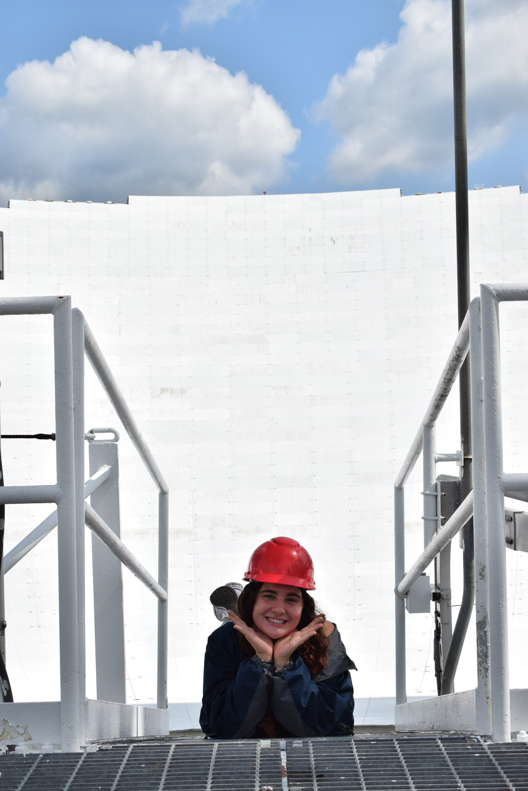

Intro

I am an Astrophysics PhD student at UC Santa Barbara. My work focuses on galaxies and the gas and stellar processes that shape how they evolve.
I am especially interested in combining observations across different wavelengths to study galaxy structure, star formation, and dynamics.
Research

My research interests are in galaxy evolution, with an emphasis on the interstellar medium, star formation, and resolved observations of galaxies.
I am interested in using multiwavelength data to connect gas, dust, stars, and kinematics in nearby and distant systems.
CV

A full CV will be posted here soon.
Contact
Please feel free to reach out by email or connect with me on LinkedIn.